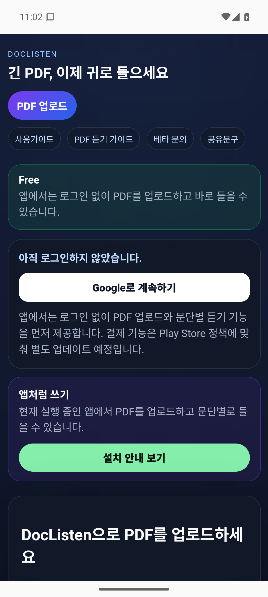
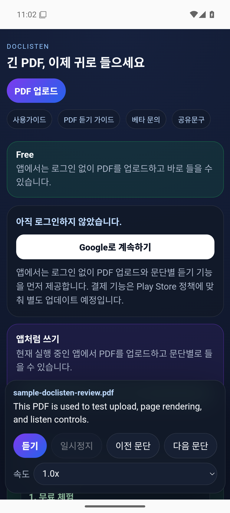
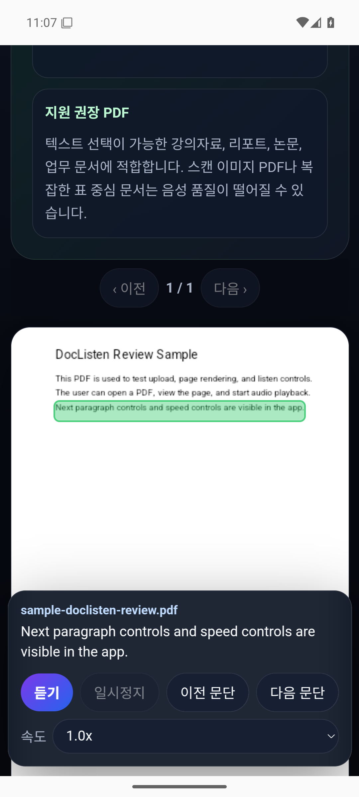

Google 로그인 후 실제로 듣고 싶은 PDF를 올려 오늘 20문단까지 무료로 테스트합니다.
DocListen
내가 권한을 가진 PDF를 귀로 확인하세요
Free 체험
파일 처리 확인
공개 샘플은 로그인 없이 확인할 수 있습니다. 개인 PDF는 Google 로그인 후 오늘 무료 듣기 20문단까지 사용할 수 있습니다.
아직 로그인하지 않았습니다.
앱처럼 쓰기
Chrome 또는 Samsung Internet에서 메뉴 → 홈 화면에 추가를 누르면 별도 설치 없이 앱처럼 바로 열 수 있습니다.
DocListen으로 PDF를 업로드하세요
직접 작성했거나 이용 허락을 받은 PDF의 원하는 문단을 누르거나, 듣기 버튼으로 현재 위치부터 들을 수 있습니다.
자체 제작한 1페이지 샘플만 열립니다. 개인정보나 저작권 자료는 포함되어 있지 않습니다.
- 공개 샘플은 로그인 없이, 개인 PDF는 Google 로그인 후 체험
- 문단 터치 → 해당 문단부터 읽기
- 개인 학습·업무 확인용 음성 → 문장 단위 휴지와 자연 낭독
- 듣기 / 일시정지 / 이전 문단 / 다음 문단
- 현재 읽는 문단 하이라이트
- 마지막 읽은 위치 저장
Verified in closed testing
실제 비공개 테스트 화면을 공개합니다.
Android 비공개 테스트 빌드에서 자체 제작 PDF를 열어 페이지 표시, 문단 선택, 하이라이트와 재생 조작을 확인했습니다. 되는 범위와 아직 지원하지 않는 범위를 함께 기록했습니다.



Quick Start Guide
3단계로 안전하게 시작하세요.
본문 문단, 속도조절, 이어듣기, 모바일 화면 꺼짐 방지, 문단 하이라이트가 내 문서에 맞는지 확인합니다.
표·수식·인용·페이지 번호처럼 정확성이 중요한 부분은 반드시 PDF 원문 화면과 함께 확인합니다.
지원 권장 PDF
직접 작성했거나 이용 권한이 있는 강의자료, 리포트, 논문, 업무 문서에 적합합니다. 유료 전자책·불법 복제 자료·타인의 권리를 침해하는 파일은 업로드할 수 없습니다.
Safe Use
PDF는 화면에 표시하기 전에 권한과 민감정보를 확인하세요.
직접 작성했거나 이용 허락을 받은 문서만 사용하고, 개인정보·영업비밀·불법 복제 자료는 업로드하지 마세요. 문서 내용은 광고 타겟팅 목적으로 판매하지 않습니다.
Free
0원
- 하루 20문단 듣기 체험
- 문단 클릭 듣기
- 전문 오디오북 음성 우선, 실패 시 브라우저 음성 자동 전환
- 마지막 위치 이어보기
권한 확인
업로드 전 필수
- 직접 작성하거나 이용 허락을 받은 PDF
- 공개 라이선스 또는 퍼블릭 도메인 자료
- 개인정보와 영업비밀 제거
- 표·수식·인용은 원문 대조
Text PDF
30MB 이하 권장
- 텍스트 선택이 가능한 PDF
- 문단 중심의 단일 열 문서
- 스캔·다단·복잡한 표는 품질 제한
- Chrome·Samsung Internet 권장
PDF 업로드 서비스라서 정책을 먼저 공개합니다.
업로드 파일 처리 방식·저작권/금지 콘텐츠 기준·개인정보·이용약관·문의 경로를 공개하고 모든 사용자에게 같은 기준을 적용합니다.
Learn
PDF 음성 청취가 처음이라면 먼저 읽어보세요.
PDF TTS, 권한 있는 문서의 음성 확인, 출퇴근 활용법, 스캔 PDF 한계를 처음 쓰는 사람도 이해할 수 있도록 공개 가이드로 정리했습니다.
무료 품질 확인
실제 사용 문서에서 음성, 속도, 모바일 재생, 문단 인식을 무료 사용량 안에서 먼저 확인합니다.
데이터 통제
계정 삭제와 파일·음성 캐시 삭제 요청 경로를 제공하며, 문서 원문을 광고 타겟팅 목적으로 제공하지 않습니다.
오류 대응
PDF 페이지, 문제 문장, 기기/브라우저 정보를 받아 음성 품질과 업로드 오류를 빠르게 수정합니다.